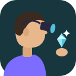

Gem Miner icon (draft)

GemStash Focus icon (draft) · Gem Miner gathers one topic into a bundle and sends it to GemStash. GemStash then focuses Today on that topic. (Pictures are plain colour blocks in this mockup.)1Pick a topic. Type one, or tap a starter pack. Gem Miner looks only through jw.org's own lists of videos and audio.
2Look it over. Tap ✕ to leave out anything you don't want. Morning Worship videos are marked FEATURED. Then send the bundle to GemStash.
3Opening screen. While a focus is on, GemStash opens with the theme, its verse and today's plan. Tap Begin (or it moves on by itself after a few seconds).
4Today, focused. Daily Text first as usual. If the bundle has a Morning Worship, it's the featured card. Then the rest of today's gems come from the focus instead of the random mix.
5The Focus control. It sits at the top of the Shelf. Switch it off or end it any time. Long videos during focus lifts the usual video-length limit (choices: No time limit / up to 30 min / up to 60 min). Your Shelf just rests, and nothing is lost.